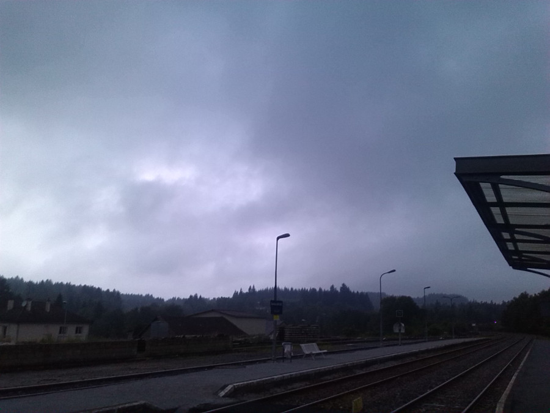

|  |
TANyAH 1998/2015
Responsables : |
Ce séminaire / groupe de travail s'est réuni de novembre 1998 à juin 2015 ; Il a donné lieu à plus de 250 exposés, pour 70 pourcents donnés par les organisateurs et pour 20 pourcents donnés par des extérieurs de passage, dont, de mémoire, Sukumar Adhikari, Javier Cilleruelo, Fabien Clery, Jean-Marie De Koninck, Shalom Eliahou, Laurent Habsieger, Henryk Iwaniec, Habiba Kadiri, Srinivas Kotyada, Kohji Matsumoto, Nathan Ng, Sapphorain Petermann, Olivier Robert, Surya Ramana, Ahmed Sebbar, R. Thangadurai, Michel Weber et Jie Wu.
Quatre étudiants (tous en poste à l'heure actuelle) ont été formés grâce à cette plateforme qui a diversifié les thèmes. Nous avons aussi alterné les exposés de recherches, les exposés de problèmes ouverts, les exposés de formation avec, lorsque cela était possible, des exposés par des extérieurs pour ouvrir au monde de la recherche moderne. Chaque exposé était conçu de façon à être indépendant, sauf quelques petites séries de deux ou trois séances ; Par ailleurs de nombreuses notes ont été écrites et diffusées. Elles sont encore accessibles.
Le soutien du laboratoire a été minimal, tout comme sa reconnaissance de la qualité du travail fourni. Ceci dit, nous avons quand même toujours obtenu une salle. Que les collègues de passage soient ici remerciés.
Olivier Ramaré